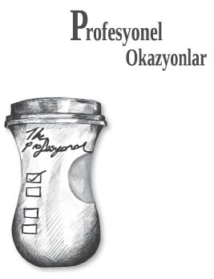

Toplantı Profesyonelleri
Toplantı ortamlarının gündem büken efendileri
Toplanmak, toplantı yapmak iş dünyasının vazgeçilmez unsurlarının başında geliyor. Peki neden toplantı yapıyoruz?
“Neden toplantı yapıyoruz?” diye akıllarda bir soru işareti oluştuğunda, cevap seçenekleri arasında; projeleri konuşmak, değerlendirme yapmak, statü almak / vermek, yöneticinin egosunu tatmin etmek, “Hayvan gibi yoğunum kafamı kaldıracak halim yok” imajını vermek, çalışanların gazını almak, çalışanları motive etmek veya gözdağı vermek gibi bir sürü nedeni görüyoruz.